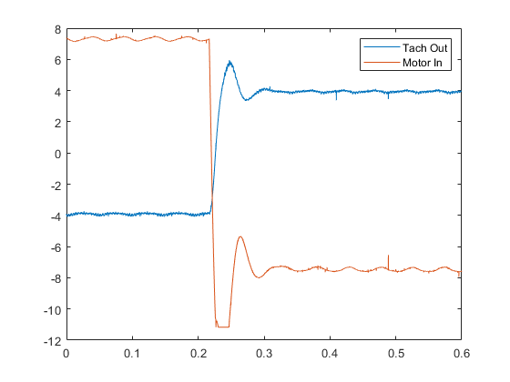
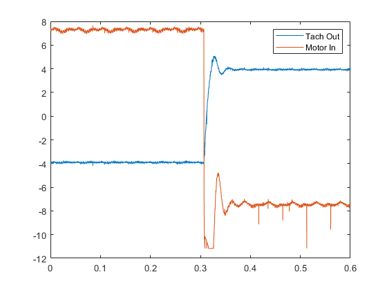
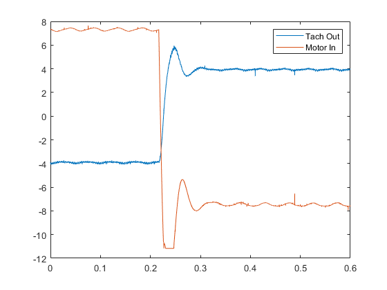
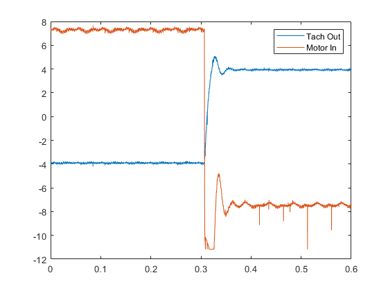
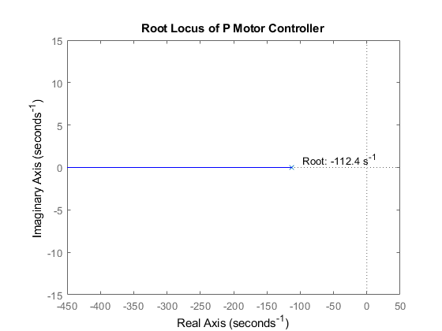
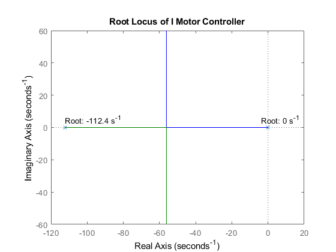
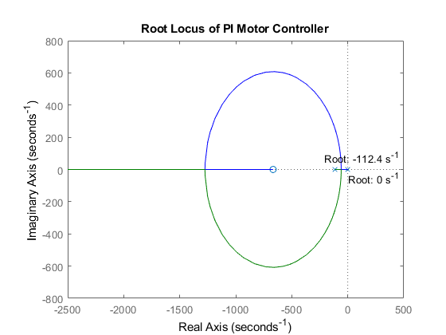
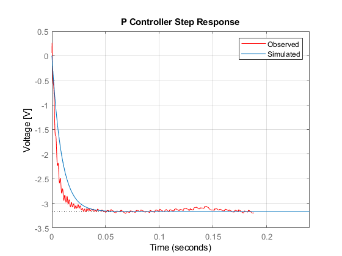
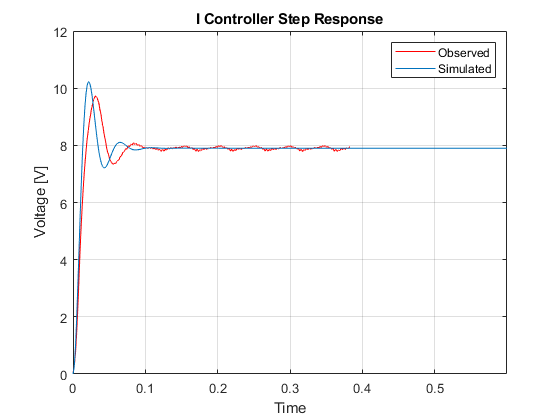
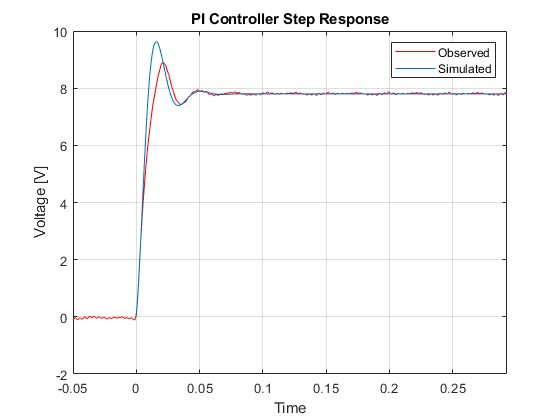

Contents
clear all close all
Reading in Data for c,d,e
close all; P_TachOut = xlsread('P-Control.csv', 'A7:A100007'); P_MotorIn = xlsread('P-Control.csv', 'B7:B100007'); P_Time = xlsread('P-Control.csv', 'C7:C100007'); figure(1) plot(P_Time,P_TachOut) hold on plot(P_Time,P_MotorIn) legend('Tach Out','Motor In') I_TachOut = xlsread('I-Control.csv', 'A7:A100007'); I_MotorIn = xlsread('I-Control.csv', 'B7:B100007'); I_Time = xlsread('I-Control.csv', 'C7:C100007'); figure(2) plot(I_Time,I_TachOut) hold on plot(I_Time,I_MotorIn) legend('Tach Out','Motor In') PI_TachOut = xlsread('PI-Control.csv', 'A7:A100007'); PI_MotorIn = xlsread('PI-Control.csv', 'B7:B100007'); PI_Time = xlsread('PI-Control.csv', 'C7:C100007'); figure(3) plot(PI_Time,PI_TachOut) hold on plot(PI_Time,PI_MotorIn) legend('Tach Out','Motor In')
  
  a
% drawing the block diagrams of each controller attached in folder
b
Root Locus Plots for each controller
Ri = 100000; %ohm Rf = 150000; %ohm C1 = .033e-6; %farad C2 = .010e-6; %farad K = 11.9; %unitless KI = 1e-4; tau = 0.0089; %sec K_m = 0.1774; %krpm/v P_sys = tf([K_m*Rf*K], [tau 1]); I_sys = tf([K_m*KI], [(tau*C1) C1 0]); PI_sys = tf([K_m*K*C2*Rf K_m*K], [tau*C2 C2 0]); % c - finding roots close all; P_TachOut = xlsread('P-Control.csv', 'A7:A100007'); % P_MotorIn = xlsread('P-Control.csv', 'B7:B100007'); P_Time = xlsread('P-Control.csv', 'C7:C100007'); I_TachOut = xlsread('I-Control.csv', 'A7:A100007'); % I_MotorIn = xlsread('I-Control.csv', 'B7:B100007'); I_Time = xlsread('I-Control.csv', 'C7:C100007'); PI_TachOut = xlsread('PI-Control.csv', 'A7:A100007'); % PI_MotorIn = xlsread('PI-Control.csv', 'B7:B100007'); PI_Time = xlsread('PI-Control.csv', 'C7:C100007'); [rp,kp] = rlocus(P_sys); Proot1_p = rp(1); Proot1_k = kp(1); [rp,kp] = rlocus(I_sys); Iroot1_p = rp(1,1); Iroot1_k = kp(1); Iroot2_p = rp(2,1); Iroot2_k = kp(1); [rp,kp] = rlocus(PI_sys); PIroot1_p = rp(1,1); PIroot1_k = kp(1); PIroot2_p = rp(2,1); PIroot2_k = kp(1); figure(4) rlocus(P_sys); title('Root Locus of P Motor Controller') text(Proot1_p + 15, 1, strcat({'Root: '}, num2str(Proot1_p,4), ' s^{-1}')); figure(5) rlocus(I_sys); title('Root Locus of I Motor Controller') text(Iroot1_p-4, 5, strcat({'Root: '}, num2str(Iroot1_p,4), ' s^{-1}')); text(Iroot2_p, 5, strcat({'Root: '}, num2str(Iroot2_p,4), ' s^{-1}')); figure(6) rlocus(PI_sys); title('Root Locus of PI Motor Controller') text(PIroot1_p, -50, strcat({'Root: '}, num2str(PIroot1_p,4), ' s^{-1}')); text(PIroot2_p-100, 75, strcat({'Root: '}, num2str(PIroot2_p,4), ' s^{-1}')); % step responses figure() P_TachOut = wsmooth(P_TachOut, P_Time, 3); plot(P_Time - .052, P_TachOut - P_TachOut(1), 'r') hold on step(P_sys* -1e-5, P_Time(end)); xlabel('Time'); ylabel('Voltage [V]'); legend('Observed', 'Simulated') title('P Controller Step Response'); grid on; xlim([0 P_Time(end)]) tau_index = .632*(mean(P_TachOut(end-30000:end))); for i = 1:length(P_Time) if P_Time(i) > .052 basetime = i; break end end baseline = mean(P_TachOut(1:basetime)); basedev = std(P_TachOut(1:basetime)); threshold = 5*basedev; for i = 1:length(P_Time) if (abs(P_TachOut(i) - baseline) > threshold) starttime = i; % start of event break end end P_Time = P_Time(starttime:end); P_TachOut = P_TachOut(starttime:end); % figure() % plot(P_Time, P_TachOut) for ii = 1:length(P_TachOut) if P_TachOut(ii) <= 0.95*tau_index && P_TachOut(ii) >= 1.05*tau_index P_tau = P_Time(ii); break end end % I Controller I_TachOut = wsmooth(I_TachOut, I_Time, 8); num = [K_m*4e-5]; den = [Ri*C1*tau C1*Ri 0]; sys = tf(num, den); sys = feedback(sys, Ri); [resp, time] = step(sys, I_Time(end)); figure() plot(I_Time -.217 , I_TachOut - I_TachOut(1), 'r', time, resp*7.9e5) xlim([0 I_Time(end)]) xlabel('Time'); ylabel('Voltage [V]'); legend('Observed', 'Simulated') title('I Controller Step Response'); grid on; I_wn = abs((5.735 - 4.092)/(0.03009 - 0.2484))*2*pi; I_fv = mean(I_TachOut(end-3000:end)) - I_TachOut(1); % I_TachOut(1) is negative I_pv = 9.739; I_OS = (I_pv - I_fv)/I_fv; I_zeta = 0.43; % determined from % overshoot I_SetTime = 4/(I_zeta*I_wn); % settling time? I_tau = I_SetTime/4; % PI Controller PI_TachOut = wsmooth(PI_TachOut, I_Time, 8); PI_TachOut = wsmooth(PI_TachOut, PI_Time, 2); KPI = 2e-5; num = [KPI*K_m*Rf*C2 KPI*K_m]; den = [Ri*C2*tau Ri*C2 0]; sys2 = tf(num, den); sys2 = feedback(sys2, Ri); [res, t] = step(sys2, PI_Time(end)); figure() plot(PI_Time -.307 , PI_TachOut - PI_TachOut(1), 'r', t, res*7.8e5) xlabel('Time'); ylabel('Voltage [V]'); legend('Observed', 'Simulated') title('PI Controller Step Response'); grid on; xlim([-.05 PI_Time(end) - .307]) PI_wn = abs((5.01 - 4.067)/(0.3559 - 0.3277))*2*pi; PI_fv = mean(PI_TachOut(end-3000:end)); PI_pv = 5.01; PI_OS = (PI_pv - PI_fv)/PI_fv; PI_zeta = 0.37; % determined from % overshoot PI_SetTime = 4/(PI_zeta*I_wn); % settling time? PI_tau = PI_SetTime/4;     
d.)
% P controller ptach = xlsread('disturbanceP.csv','A8:A100007'); ptime = 0:2.4e-6:(2.4e-6)*1e5; ptime = ptime(1:end-1); ptach = wsmooth(ptach, ptime, 3); ptachInt = mean(ptach(1:7000)); ptachFin = mean(ptach(end-80000:end)); pSSerror = ((ptachInt - ptachFin)/ptachInt)* 100; figure() % plot(ptime, ptach); % I controller itach = xlsread('disturbanceI.csv', 'A8:A100007'); itime = 0:6e-6:(6e-6)*1e5; itime = itime(1:end-1); itach = wsmooth(itach, itime, 3); itachInt = mean(itach(1:35000)); itachFin = mean(itach(end-35000:end)); iSSerror = abs((itachInt - itachFin)/itachInt)* 100; figure() % plot(itime, itach); % PI controller pitach = xlsread('disturbancePI.csv', 'A8:A100007'); pitime = 0:6e-6:(6e-6)*1e5; pitime = pitime(1:end-1); pitach = wsmooth(pitach, pitime, 3); pitachInt = mean(pitach(1:10000)); pitachFin = mean(pitach(end-50000:end)); piSSerror = abs((pitachInt - pitachFin)/itachInt)* 100; figure() % plot(pitime, pitach);